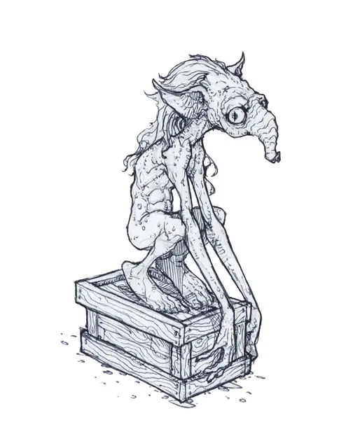

Кильмулис
Killmoulis
Крошечная Фея, нейтральная

Класс Доспеха 14
Хиты 7 (2к4 + 2)
Скорость 30 футов
| мод | спас | ||
|---|---|---|---|
| СИЛ | 4 | −3 | −3 |
| ЛОВ | 19 | +4 | +4 |
| ТЕЛ | 13 | +1 | +1 |
| мод | спас | ||
|---|---|---|---|
| ИНТ | 12 | +1 | +1 |
| МДР | 14 | +2 | +2 |
| ХАР | 13 | +1 | +1 |
Навыки Восприятие +4, История +3, Скрытность +8
Чувства тёмное зрение 30 футов, пассивное Восприятие 14
Языки Общий, Сильван, Телепатия 60 фт.
Опасность 0
Бонус мастерства +2
Действия
Удар. . Рукопашная атака оружием: −1 к попаданию, досягаемость 5 фт., одна цель. Попадание: 1 (1) дробящего урона.
Благословение обильной щедрости (1/день). Кильмулис выбирает до 8 видимых существ, находящихся в пределах 100 футов. В следующий раз, когда они закончат продолжительный отдых, они восстановят все Кости Хитов и получат 10 временных хитов.
Проклятие дурного гостепреимства (1/день). Кильмулис выбирает до 8 видимых существ, находящихся в пределах 100 футов. В следующий раз, когда они закончат продолжительный отдых, они не восстановят Кости Хитов.
Описание
Кильмулис действительно может стать настоящим подарком, но не ждите, что его благосклонность продлится еще мгновение после того, как вы съедите самые вкусные кусочки.
Кильмулис может быть как проклятьем, так и благом для группы авантюристов. Когда его кормят вкусными угощениями, это существо является полезным помощником, который чинит доспехи, находит травы, превращающие самые скудные рационы в пир, и создаёт гостеприимное пристанище из самого унылого и неудобного лагеря. Но если отряд использует кульмулиса или пренебрегает им, то подлая месть этого существа может превратить даже самую простую экспедицию в испытание на истощающение, делающее всех участников усталыми, подавленными и угрюмыми.
Путешествующая фея. Всякий раз, когда кто-то совершает акт благотворительности, помогая усталому или потерянному путешественнику, в Стране Фей спонтанно появляется кильмулис. Выйдя из тени рядом с местом действия, существо отправляется в путь, бродя в поисках путешественников. У некоторых может быть еда, которую он может утащить в обмен на преимущества своей магии. Застенчивые и одинокие от природы, кильмулисы любят наблюдать и слушать людей из отдаленных мест, о которых они мало знают. Будь то яростные налётчики, предприимчивые торговцы или смелые искатели приключений, все путешественники могут предложить ему что-нибудь интересное.
Голодные помощники. Несмотря на своё странное появление и происхождение, кильмулисы хотят тех же удобств, что и обычные люди. Они обожают сладкие конфеты, свежие фрукты и другие деликатесы. Когда кильмулис сталкивается с группой путешественников, он прячется и внимательно следит за ними. Ночью он пробирается в лагерь путешественников и ищет вкусности в их запасах, но удовлетворится и сухпайками, орехами и другими закусками. Если он их находит, то быстро засасывает длинным носом целую дневную порцию. В обмен на это он использует свою магию для повышения комфорта путешественников во время отдыха.
Горький упрёк. Кильмулис пойдёт за любой группой, у которой он добыл вкусные закуски, каждый вечер проскальзывая в лагерь, чтобы наесться и заплатить за свой пир полезной магией. Но если путешественники нападают, вмешиваются или пытаются поймать кульмулиса в ловушку, он накладывает небольшое проклятие на группу и пытается сбежать. На протяжении всего путешествия персонажей их сухпайки на вкус напоминают пепел, а любые места для лагеря кишат вшами и кусачими насекомыми. Все члены отряда просыпается больными и уставшими, поскольку камни или острые палки как-то оказываются у них в спальниках.
Если кильмулис зол, он продолжит преследовать группу и накладывать своё проклятие. Только предложение хорошей еды и искренние извинения могут успокоить кульмулиса. Без этого эти существа будут держать обиду на грубое поведение группы в течение нескольких дней.